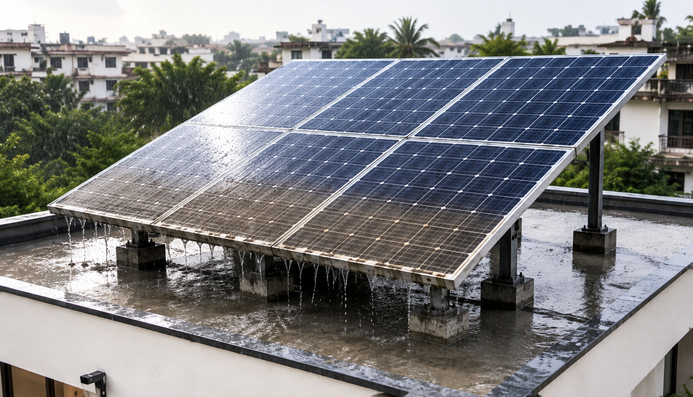

Com elimina la pluja la brutícia?
Ara mateix estudio la física del despreniment de partícules de superfícies sota flux d'aigua continu, amb la neteja de panells solars com a problema motivador.
La pregunta
La pols i altres partícules s'acumulen sobre els panells solars i en redueixen el rendiment. La pluja ofereix un mecanisme de neteja natural, però les condicions físiques sota les quals les partícules adherides es desprenen encara no s'entenen del tot.
Què estic estudiant ara mateix
Ara mateix investigo aquest problema combinant experiments microfluídics controlats amb modelització analítica. La idea clau és que la neteja per pluja no és només un problema d'impacte de gotes: sobre una superfície inclinada, primer una interfície aire-aigua arriba a la partícula i després una pel·lícula d'aigua en moviment actua sobre ella.
Per què és important
El meu objectiu és identificar els mecanismes i les condicions crítiques de despreniment, des de partícules model ideals fins a contaminants més realistes. Més enllà dels panells solars, aquest treball aborda una pregunta més general de dinàmica de fluids interfacial: com les interfícies en moviment i els esforços del fluid interaccionen amb partícules adherides a superfícies.

Línies de recerca
El projecte actual se situa a la intersecció de diverses àrees que han marcat la meva trajectòria.
Dinàmica de fluids i microfluídica
Fluxos confinats, fronts líquid-gas, moviment impulsat per pressió i models analítics físicament fonamentats.
Interfícies, mullabilitat i capil·laritat
Línies de contacte mòbils, imbibició, superfícies recobertes i forces capil·lars a petita escala.
Fluxos multifàsics i oscil·latoris
Dinàmica acoblada líquid-gas, oscil·lacions impulsades per bombolles i amortiment en geometries confinades.
Reologia i interaccions partícula-fluid
Mesura basada en el flux, transport a través de medis complexos i mecànica del despreniment de partícules.